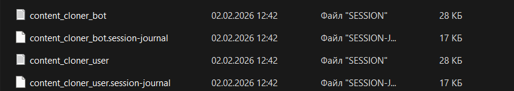

Полное руководство
Добро пожаловать в подробную документацию Content Scraper Premium. Этот инструмент предназначен для профессионального управления контентом и автоматизации клонирования между Telegram-каналами.
1. Быстрый старт
Системные требования
- Windows 10/11 или Linux Server (Ubuntu 20.04+).
- Python версии 3.10 или выше.
- Стабильное интернет-соединение.
Установка
1. Скачайте архив content-scraper-premium.zip.
2. Распакуйте его в отдельную папку.
3. **Запуск терминала**: Чтобы открыть терминал в папке, нажмите на пустое место **правой кнопкой мыши**
и выберите Открыть в терминале (или Shift + ПКМ ->
Открыть окно PowerShell здесь).
4. Запустите install.bat — это автоматически создаст виртуальное окружение и установит все
нужные библиотеки.
2. Настройка ключей доступа
Для работы скрипта нужны ваши личные API ключи Telegram. Это безопасно — они хранятся только у вас.
Получение API_ID и API_HASH
- Перейдите на my.telegram.org.
- Авторизуйтесь и создайте новое приложение (любое название).
- Скопируйте
App api_idиApp api_hash. - Откройте файл
config.py(через любой текстовый редактор, например Блокнот). - Вставьте значения в поля
API_IDиAPI_HASH. - Важно: Все значения должны быть в одинарных кавычках, например '12345678'.
Создание Бота
- Напишите @BotFather в Telegram.
- Создайте нового бота и получите
API Token. - Откройте файл
config.pyи вставьте токен в полеBOT_TOKEN. - В поле
ADMIN_IDвпишите ваш личный ID (его можно узнать у @userinfobot).
3. Как работать с Админ-панелью
После запуска скрипта (python main.py), напишите вашему боту /start. Откроется
интерактивное меню.
Добавление пар каналов
Нажмите "➕ Добавить пару". Бот попросит ввести ID донора и ID цели.
- Донор (Donor): Канал, откуда мы берем контент. Вы должны быть подписаны на него своим основным аккаунтом.
- Цель (Target): Канал, куда мы постим. Бот должен быть назначен в нем Администратором.
4. Продвинутые функции
Удаление и замена текста (Regex)
Вы можете настроить правила замены ссылок или слов. В админ-панели выберите пару и нажмите "⚙️ Настройки текста".
Пример: чтобы удалить все упоминания конкурента, добавьте правило: regex:.*конкурент.* ->
замена на [Ваш Бренд].
Решение проблемы PEER_ID_INVALID
Иногда бот не видит целевой канал по его ID. В нашем скрипте реализована система "обучения":
- Скрипт использует ваш User-аккаунт, чтобы найти канал.
- Затем он передает данные Боту по юзернейму (например, @mychannel).
- Бот успешно кэширует канал и ошибка пропадает навсегда.
5. Channel ID Sniffer (Поиск ID)
Часто бывает сложно найти ID приватного канала или канала, на который вы только что подписались. Для этого мы создали Sniffer Tool.
Как запустить
- Запустите
python main.py. - В появившемся меню выберите пункт
2(Channel ID Sniffer). - Скрипт начнет слушать все входящие сообщения на вашем аккаунте.
Просмотр результатов
Как только в нужных каналах появятся сообщения, сниффер перехватит их ID. Вы можете увидеть результаты в реальном времени в консоли или открыть файл:
sniffer_log.html
Это красивый HTML-отчет, где можно просто нажать на ID, чтобы скопировать его в буфер обмена для дальнейшего добавления в скрапер.
7. Смена аккаунта и сброс сессий
Если вам нужно сменить Telegram-аккаунт, привязанный к скрипту, или полностью сбросить базу данных, следуйте этой инструкции.
Как сбросить сессию
1. Полностью выключите скрипт (закройте окно терминала).
2. Найдите файлы с расширением .session в корневой папке проекта.
3. Удалите эти файлы. При следующем запуске скрипт снова попросит ввести номер телефона.
Как очистить базу данных
Файл database.db хранит все ваши пары каналов, статистику и настройки кнопок. Если вы хотите
начать "с чистого листа", просто удалите этот файл.
.py, если
вы не являетесь разработчиком. Это приведет к поломке скрипта.
Для наглядности, вот как выглядят файлы сессий в папке:
8. Часто задаваемые вопросы (FAQ)
Нужен ли VPN?
Если в вашем регионе Telegram не заблокирован напрямую — нет. Если же вы запускаете бота из Рашки без прокси, могут быть задержки.
Поддержка "Кружочков" (Video Notes)
В Premium версии доступна автоматическая конвертация видео в формат кружочков. Бот сам обрежет видео до нужного аспекта и отправит его как видео-сообщение.
- Pro-лицензия: Требуется для работы конвертации.
- Автоматика: Если у вас есть лицензия, бот сам поймет, что пришло видео-сообщение и обработает его.
Сколько каналов можно добавить?
В Премиум версии ограничений нет, но мы рекомендуем до 20-30 активных пар на один аккаунт, чтобы избежать Flood Wait от Telegram.